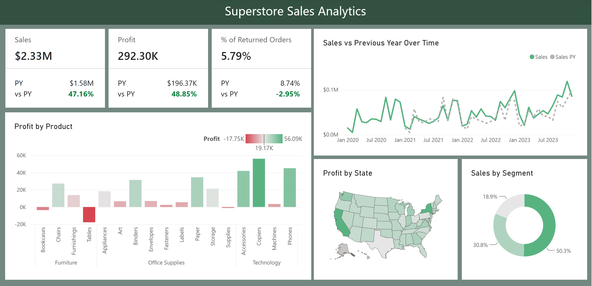

Dashboard
The dashboard tracks current performance against the previous year and combines KPI monitoring with product, geographic, segment, and time-series analysis.

Performance Analysis
Sales
Profit
Returned Orders
Approx. Profit Margin
Key Business Insights
1. Strong Year-over-Year Growth
Sales increased from $1.58M to $2.33M, a 47.16% increase. Profit rose from $196.37K to $292.30K, or 48.85%. Because profit growth slightly exceeded sales growth, the business maintained a healthy level of profitability while expanding revenue.
2. Returns Improved Materially
The returned-order rate fell from 8.74% to 5.79%, a decline of 2.95 percentage points. That is roughly a one-third reduction relative to the previous-year return rate, which is a meaningful operational improvement.
3. Product Profitability Is Uneven
Copiers are the strongest profit contributor at about $56.09K. Tables are the largest loss-making product group at approximately -$17.75K. Bookcases and Supplies also appear slightly unprofitable, suggesting that category-level pricing, discounting, or cost structure deserves closer review.
4. Technology Drives Profit
The Technology category contains several of the strongest profit contributors, including Copiers, Phones, and Accessories. This makes Technology an important area for revenue protection and growth planning.
5. Sales Are Concentrated by Segment
The largest customer segment accounts for 50.3% of sales, while the other two segments contribute 30.8% and 18.9%. More than half of sales therefore come from a single segment, making that group particularly important to overall performance.
6. Sales Trend Is Positive but Volatile
Monthly sales fluctuate considerably, but the later periods show repeated high points above earlier levels. The current-year series also frequently runs above the previous-year comparison, supporting the strong overall year-over-year growth shown by the KPI cards.
Business Recommendations
The analysis suggests protecting the strongest Technology product lines, investigating losses in Tables and other weak product groups, and continuing the operational practices that contributed to the lower return rate. The concentration of sales in the largest segment also makes segment retention and targeted growth important areas for future analysis.
Interactive Report Features
The report includes filters for Customer Name, Country/Region, Segment, and date range, allowing users to narrow the analysis and examine performance for specific customer groups and time periods.
Full Power BI Report
View the exported Power BI report below or open the PDF in a separate tab.
Open Full PDF